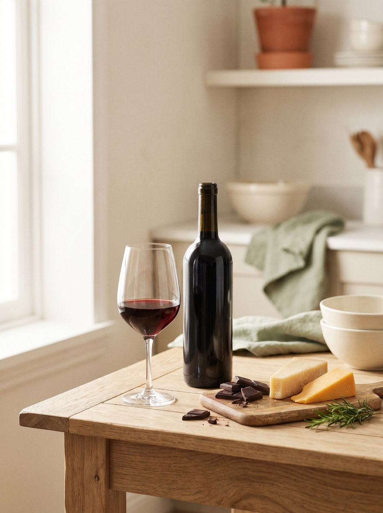
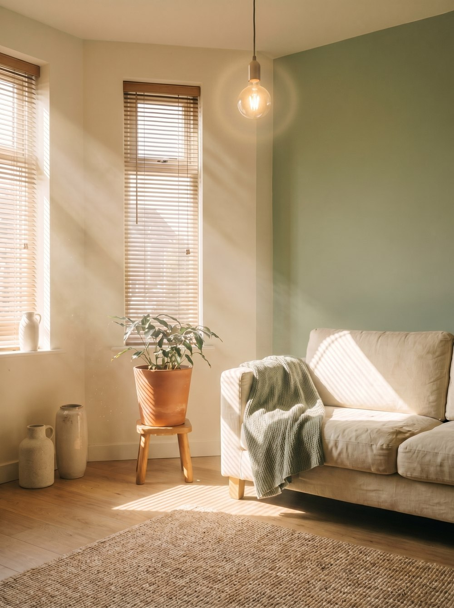
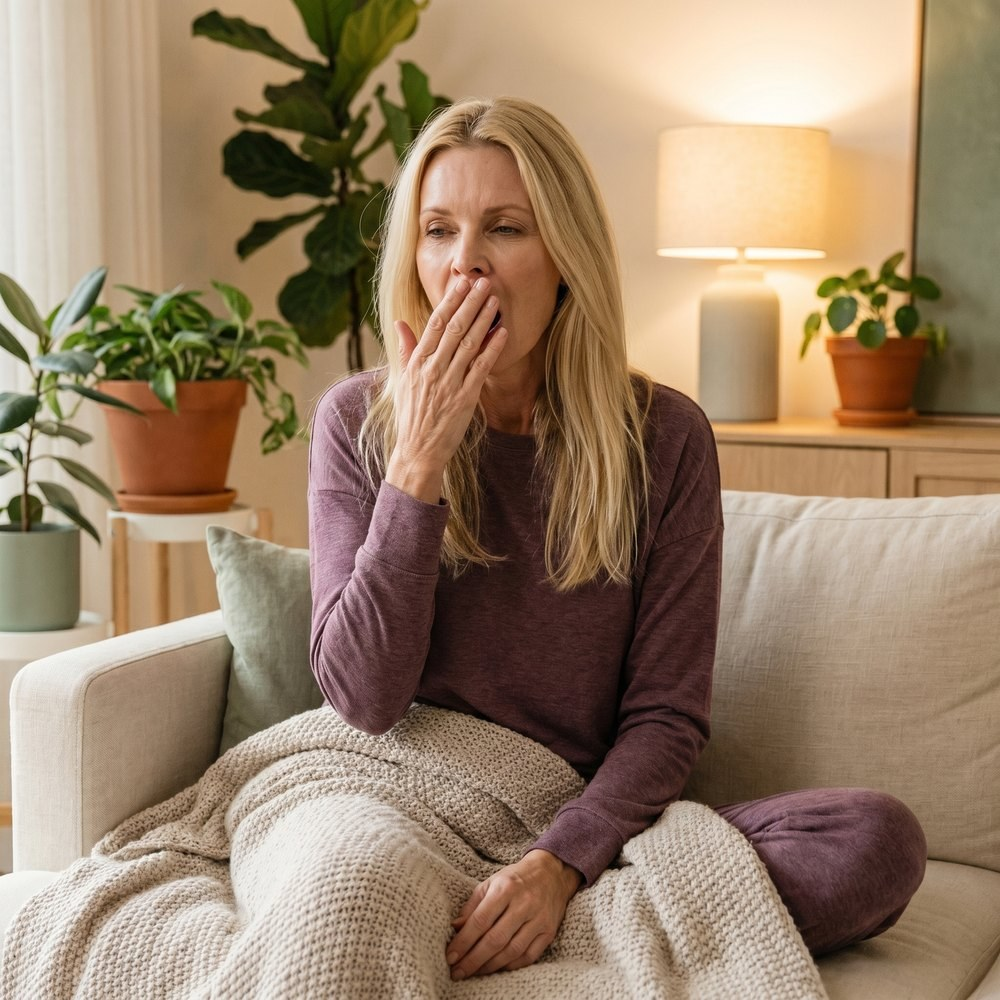
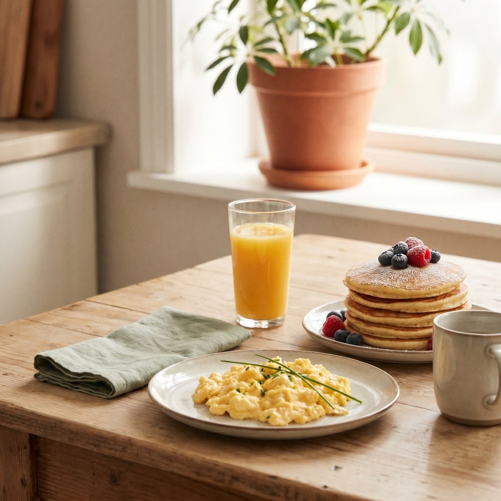
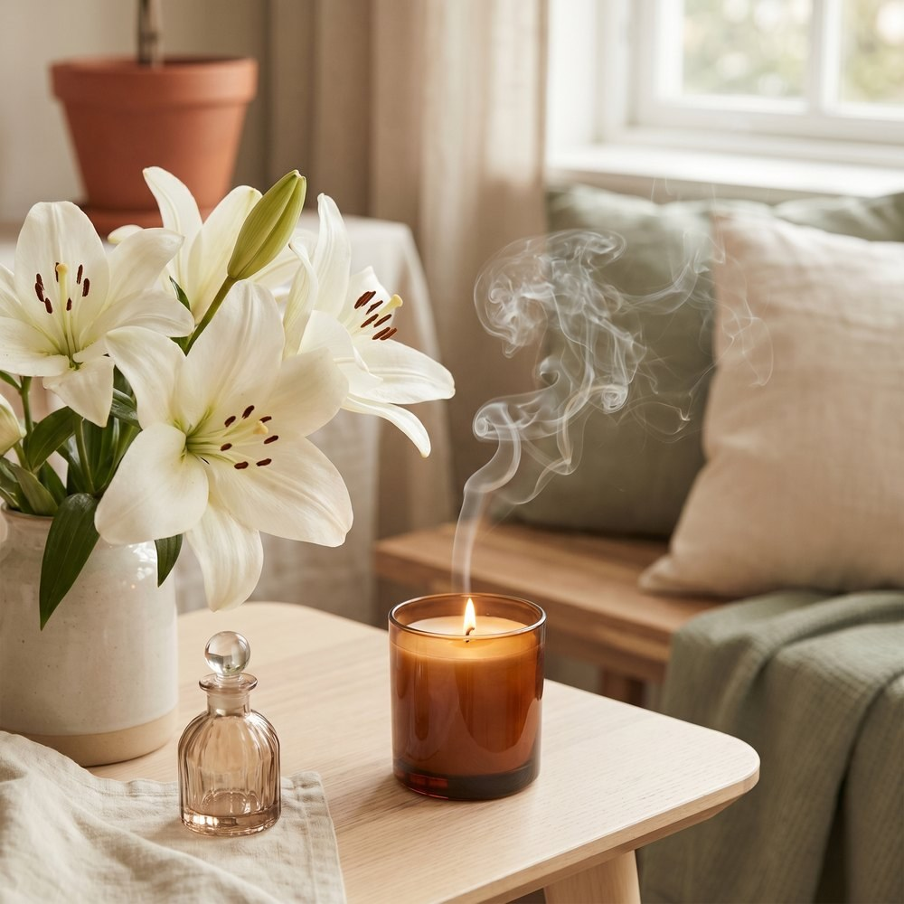
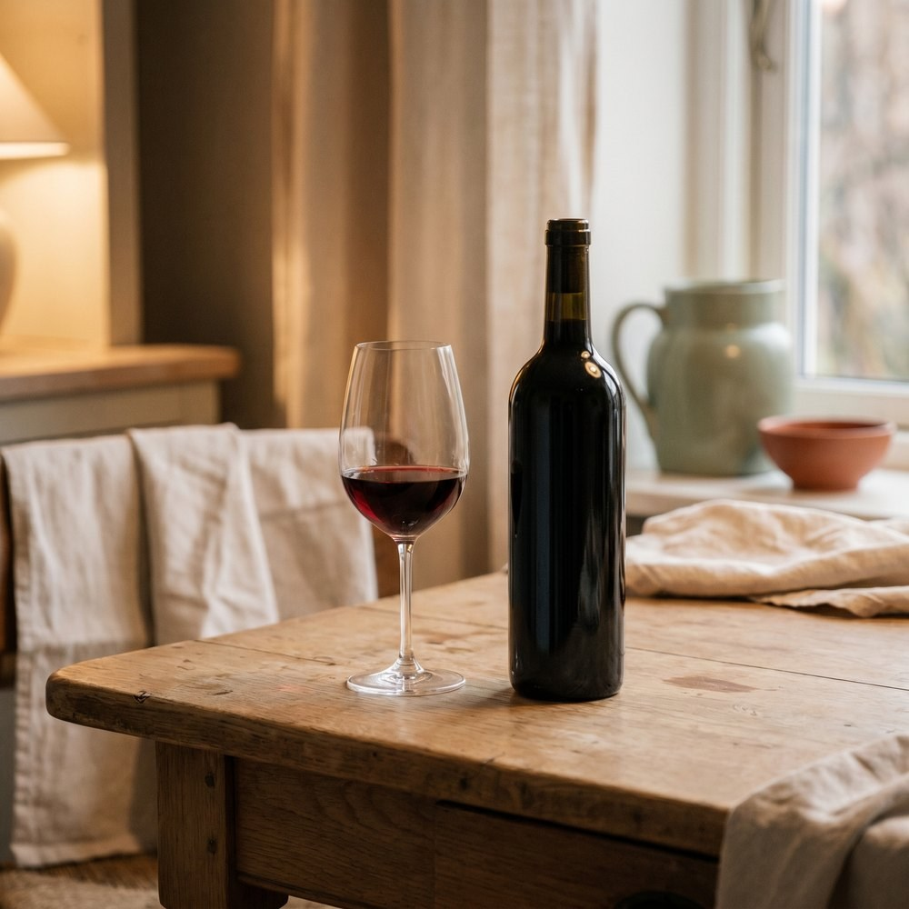
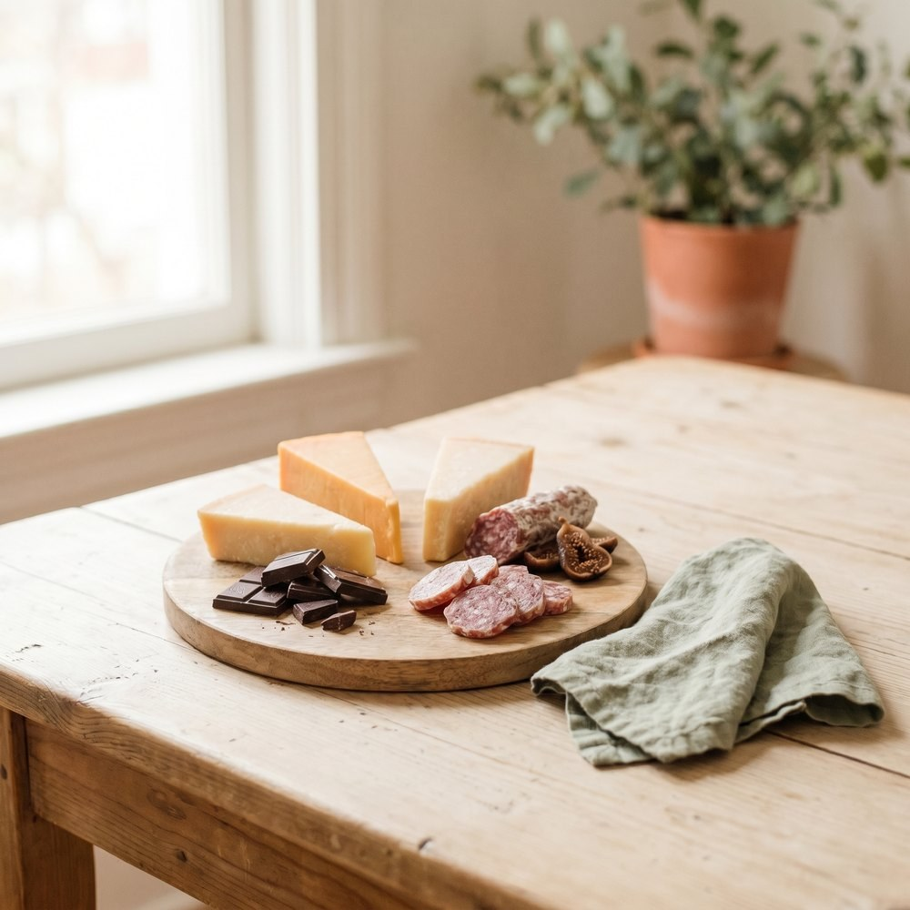

You cannot control that you have migraine, but you can change how often it shows up. This is the practical guide: how to find your own triggers, and the everyday habits proven to make attacks rarer.
From your clara care team⏱ 10 min readEvidence based
Prevention is built one small, steady habit at a time. The headache diary is where it starts.
Migraine prevention has two halves that work together.
1
Finding and managing your triggers. They are personal, and no two people share the same list.
2
Building a handful of everyday habits, around sleep, meals, movement, and stress, that quietly raise the bar an attack has to clear before it starts.(15)
Neither half cures migraine, but together they can meaningfully lower how often and how hard the attacks come, and they make your medicines work better.
Start with a headache diary
A diary is the single most useful tool you have. It is the only reliable way to spot your real triggers, to see whether a change is actually helping, and to catch yourself drifting toward taking acute medicine on too many days. Track every day, including the good ones, because the quiet days are what make the patterns visible.
Look for repeated patterns, not single bad days. One migraine after a glass of red wine could be coincidence. Four attacks, each within a day of red wine, is a signal. Most patterns become clear after about eight to twelve weeks of steady tracking, so give it time before drawing conclusions.(1)
Triggers, or the attack already starting?
This is the most common mix up in all of migraine, and getting it right will save you from giving up foods you never needed to. A migraine is not only the headache. It moves through phases, and the earliest one, the prodrome, begins up to a day or two before the pain and happens in most people who get migraine.(2, 3)

Food and drink
Wine, aged cheese, chocolate.
Weather changes
Shifting pressure and rainy fronts.

Bright or flickering light
Harsh light, glare and screens.
Here is the trap: some of the things people blame as triggers are actually the first symptoms of an attack that has quietly already begun. If you crave chocolate and then get a migraine, the craving was often the migraine announcing itself, not the cause. Eliminating the chocolate will not help, and you will have lost the chocolate for nothing.
True triggers
Things that come before and provoke an attack.
Stress and the let down after it
The drop in estrogen around a period
Skipping meals or fasting
Too little or too much sleep
Alcohol, especially red wine
Aged cheese and other tyramine foods, for some people
Weather and pressure changes
Bright or flickering light, strong smells
Early symptoms
Often mistaken for triggers, but they are the attack beginning.
Food and chocolate cravings
Yawning
Neck stiffness or pain
Tiredness and low energy
Mood change, irritability
Feeling extra sensitive to light or sound
Notice that a few items, like neck pain and tiredness, can sit on either side. That overlap is exactly why a single observation is unreliable, and why the diary, looking for the same thing happening again and again, is the only way to tell them apart.(4)
The everyday habits that work
These foundations will not erase migraine, but they steadily lower how often it strikes, and they carry no downside. The key is to add them one at a time rather than overhauling your whole life in a week.
Sleep on a steady clock
Do this
Aim for seven to nine hours, and keep the same wake time every day, weekends included. A short wind down away from screens and a cool, dark room help.
Evidence
Both too little and too much sleep can trigger an attack, and poor sleep tracks with more frequent migraine, which is why the weekday to weekend swing catches so many people.(1, 7)
Eat on a regular schedule
Do this
Three meals at roughly consistent times, breakfast within an hour of waking, and a snack on hand for delays. Do not skip meals to save time.
Evidence
Not eating is one of the most consistently reported triggers, and it is also one of the easiest to fix.(1)
Stay hydrated
Do this
Sip water through the day and drink more in heat, with exercise, or after alcohol. Pale, clear urine is the simplest gauge.
Evidence
Dehydration is a commonly reported trigger. The science here is softer than for sleep, but the habit is free and carries no risk.
Keep caffeine steady
Do this
Pick a consistent daily amount, roughly two cups of coffee or less, and stick to it. If you want to cut down, taper over two to three weeks rather than stopping cold.
Evidence
Caffeine cuts both ways: small steady amounts can help, but a sudden drop is a classic trigger. The enemy is the swing, not the coffee.
Move most days
Do this
Gentle aerobic exercise, walking, cycling or swimming, about three to four times a week for thirty minutes. Warm up first and build up slowly, since leaping straight into hard effort can set off an attack.
Evidence
This is one of the strongest tools you have that is not a medicine. In a head to head trial, regular exercise reduced attacks about as well as a relaxation program and as well as a standard preventive medicine.(5)
Manage stress, and the let down
Do this
Build a small daily calming habit even on good days, such as five minutes of slow breathing, breathe in for four, out for six. Talk therapy (CBT), biofeedback, and mindfulness all help.
Evidence
Stress is the most reported trigger of all, and attacks often land after stress lifts, not during it, so protect your weekends and the days after a deadline.(1, 6, 14)
Handling specific triggers
Once your diary points to a trigger that is truly yours, here is how to take the practical sting out of each of the common ones.
Stress and let-down
Steady sleep, meals, and a daily calming habit. Be extra careful with the window right after stress, when the pressure comes off.
Hormonal and menstrual
Track your cycle next to your headache days, then raise the pattern with your doctor (see below).

Sleep disruption
Hold a consistent wake time. Remember both short and long nights can trigger attacks.

Skipped meals
Regular meals, never skip breakfast, carry a snack for busy or delayed days.
Dehydration
Keep a water bottle in sight; aim for pale urine through the day.
Weather changes
Not something you can change, so track it. Some people use an anti-inflammatory ahead of a forecast day, but only after their doctor agrees.
Bright or flickering light
Sunglasses outdoors, lower screen brightness, regular screen breaks. Tinted lenses help some people.

Strong smells
Reduce exposure where you can; perfumes, cleaning products, and smoke are common culprits.

Alcohol
Red wine is the most reported offender. Use your diary to learn your own limit and type, since it is very individual.(8)

Specific foods
Do not cut foods on suspicion. The evidence for food triggers is modest and personal, and many are really early symptoms. Only drop a food if a four week test, removing then reintroducing it, confirms it.(9)
Screen time
Try the 20-20-20 rule: every 20 minutes, look about 20 feet away for 20 seconds. Keep your eye prescription current.
If your attacks follow your cycle
Migraine is the headache most affected by hormones, and for many women attacks cluster in the days around their period. The trigger is not high estrogen but the natural drop in estrogen just before bleeding begins, which lowers the threshold for an attack.(10, 11) These attacks, defined as falling from two days before to three days after the period starts, tend to be longer and more stubborn than others.(12)
The first and most useful step is simply to track your cycle in the diary, which often reveals the pattern on its own. Keep the everyday habits especially steady in the days beforehand. If your attacks reliably follow your period, tell your clara doctor, because there are specific options, such as a short preventive taken only around your period, that are decided with a doctor based on how regular your cycle is and whether you have aura.
One important safety note
If you have migraine with aura, birth control that contains estrogen is usually avoided for safety reasons. This is one more reason hormonal strategies are a conversation with your doctor rather than something to try on your own.
Your first eight weeks
You do not have to do everything at once. In fact you should not. Here is a gentle way to build the habits in stages, so each one has room to stick.
Your progress0 of 4 done
Tick each stage as you build it. Small steps, big change.
Weeks 1–2
Start the diary and lock a consistent sleep and wake time. Add a five minute breathing practice, morning and evening.
Weeks 3–4
Regular meals, three a day, no skipping. Begin gentle exercise, three times a week, starting at twenty minutes.
Weeks 5–6
Hydration and steady caffeine. Review your diary for any emerging pattern, and message your care team about it.
Weeks 7–8
Add a calm practice you will keep, such as CBT, biofeedback, or structured relaxation. Review whether your monthly attack count has moved.
How to know it is working
By around eight weeks, look for fewer migraine days a month, lower severity scores, and less reliance on rescue medicine. Better sleep, energy, and mood often come along for free. If nothing has moved, that is your cue to message clara about adding a preventive medicine, and some people also find a daily supplement like riboflavin worth discussing with their doctor.(13)
A last, honest word. Migraine is a neurological condition, not a habit you can simply outrun, and lifestyle changes lower the baseline rather than cure it.(15) So manage the triggers your own diary reveals, keep the everyday habits that help, and resist the trap of shrinking your life chasing a long list of maybes. The goal is fewer, gentler attacks and a fuller life, not a smaller one.
Sources
Kelman L. The triggers or precipitants of the acute migraine attack. Cephalalgia. 2007;27(5):394-402.
Charles A. The evolution of a migraine attack: a review of recent evidence. Headache. 2013;53(2):413-419.
Laurell K, Artto V, Bendtsen L, et al. Premonitory symptoms in migraine: a cross-sectional study in 2714 persons. Cephalalgia. 2016;36(10):951-959.
Martin VT, Behbehani MM. Toward a rational understanding of migraine trigger factors. Medical Clinics of North America. 2001;85(4):911-941.
Varkey E, Cider A, Carlsson J, Linde M. Exercise as migraine prophylaxis: a randomized study using relaxation and topiramate as controls. Cephalalgia. 2011;31(14):1428-1438.
Lipton RB, Buse DC, Hall CB, et al. Reduction in perceived stress as a migraine trigger: testing the let-down headache hypothesis. Neurology. 2014;82(16):1395-1401.
Walters AB, Hamer JD, Smitherman TA. Sleep disturbance and affective comorbidity among episodic migraineurs. Headache. 2014;54(1):116-124.
Onderwater GLJ, van Oosterhout WPJ, Schoonman GG, et al. Alcoholic beverages as trigger factor and the effect on alcohol consumption behavior in patients with migraine. European Journal of Neurology. 2019;26(4):588-595.
Martin VT, Vij B. Diet and headache: part 1. Headache. 2016;56(9):1543-1552.
MacGregor EA, Frith A, Ellis J, et al. Incidence of migraine relative to menstrual cycle phases of rising and falling estrogen. Neurology. 2006;67(12):2154-2158.
Headache Classification Committee of the International Headache Society. The International Classification of Headache Disorders, 3rd edition (ICHD-3). Cephalalgia. 2018;38(1):1-211.
Schoenen J, Jacquy J, Lenaerts M. Effectiveness of high-dose riboflavin in migraine prophylaxis: a randomized controlled trial. Neurology. 1998;50(2):466-470.
Holroyd KA, Cottrell CK, O'Donnell FJ, et al. Effect of preventive (beta blocker) treatment, behavioural migraine management, or their combination on outcomes of optimised acute treatment in frequent migraine: randomised controlled trial. BMJ. 2010;341:c4871.
This guide is general education from your clara care team and is not a substitute for personal medical advice. Your triggers, your suitability for any strategy, and any medicine or supplement are decided with your clara doctor based on your individual health.